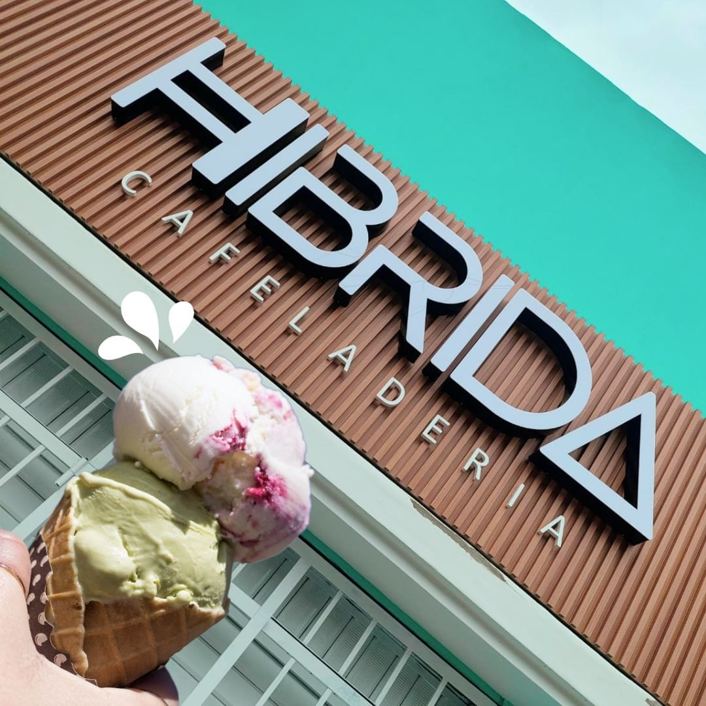
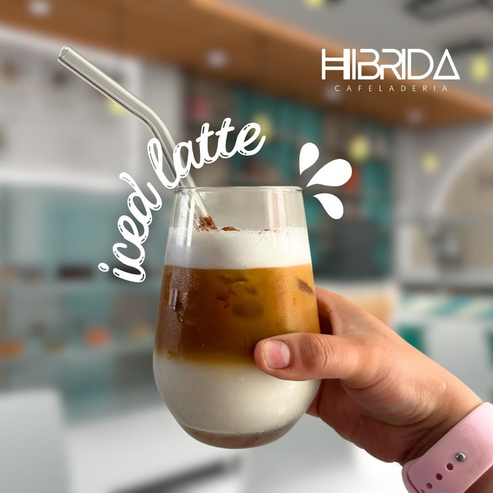
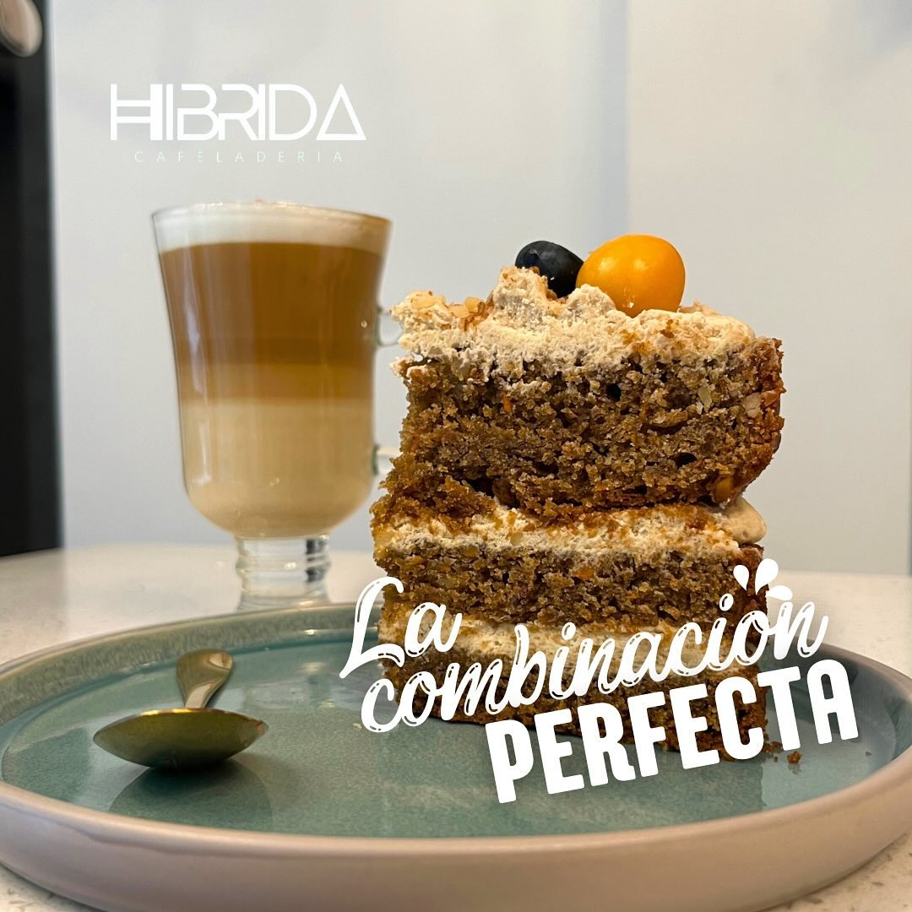
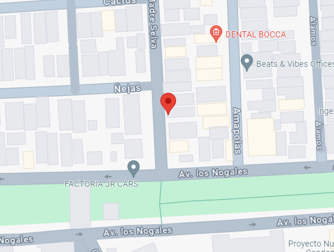

¡Bienvenido a "Híbrida"! Somos mucho más que una cafetería y heladería, somos el lugar donde los sabores se fusionan para crear experiencias únicas. Desde nuestros deliciosos cafés artesanales hasta nuestros helados cremosos y originales, en "Híbrida" encontrarás el equilibrio perfecto entre lo clásico y lo innovador. Ven y descubre un mundo de sabores en constante evolución. ¡Te esperamos en "Híbrida" para deleitar tus sentidos!
Nuestro Ice Latte combina espresso suave con leche fresca y hielo para una experiencia refrescante y deliciosa. Perfecto para satisfacer tus antojos de café en días calurosos.
Nuestro carrot cake es una delicia esponjosa, horneada con zanahorias frescas y especias aromáticas, cubierta con un glaseado de crema de queso irresistible. Un bocado de felicidad en cada rebanada.
¡Nos encontramos en el corazón de Santa Anita, en la calle Madre Selva 118! Ven y visítanos para disfrutar de nuestras delicias en un ambiente acogedor y lleno de sabores. Estamos ansiosos por recibirte en nuestro espacio en "Híbrida" y compartir contigo momentos inolvidables de sabor y buena compañía. ¡Te esperamos con los brazos abiertos!
¡Estamos aquí para servirte! Si tienes alguna pregunta, sugerencia o simplemente deseas saludarnos, no dudes en ponerte en contacto con nosotros. Puedes encontrarnos en Instagram bajo el usuario @hibridacafeladeria para mantenerte al tanto de nuestras novedades, promociones y eventos especiales.